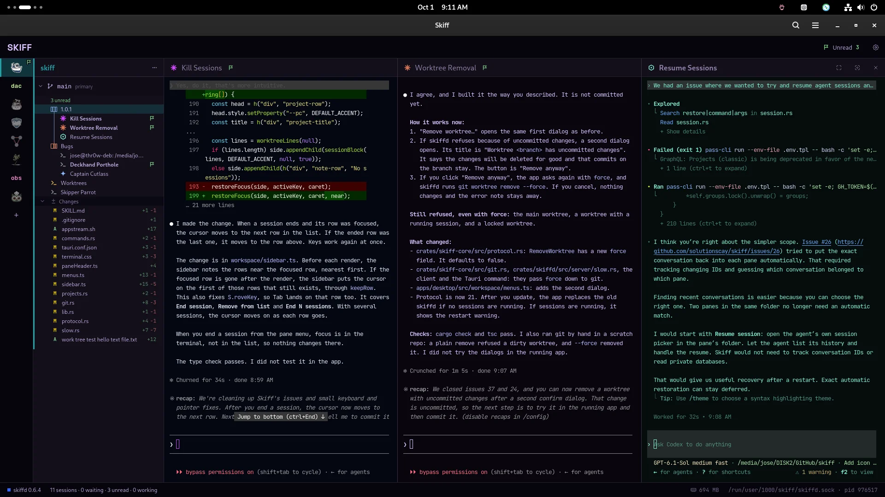

Sessions outlive the window
A daemon, skiffd, owns every terminal. Close the window and the agents keep working. Open it again and each terminal shows its last screen.
Skiff keeps agent sessions organized across projects and Git worktrees, on Linux and macOS.
Editing and previews stay in the apps you already use.

One project, one group, three agents side by side. The flag marks the session that finished.
Add a project (a Git repository), make worktrees in it, and start agent or shell sessions in each worktree. Sessions sit side by side in named groups. Close the window and the agents keep running.
A daemon, skiffd, owns every terminal. Close the window and the agents keep working. Open it again and each terminal shows its last screen.
Each session shows when it waits for you, works or finishes. A finished session gets an unread flag until you go to it.
Sessions sit under the project and worktree they run in. If an agent goes to work in another worktree, the sidebar shows it there too.
Put related sessions in a named group and split them side by side. Drag a pane by its header to move it.
Give each project and group its own terminal theme. One look tells you where you are.
Each worktree lists its changed files. A double-click shows the diff. Files open in the apps you pick under Settings › Open with.
Skiff comes with these agents in Settings. Add any other command line, or start a plain shell.
Skiff has no plugins, no automations and no hooks into agent configs. It writes nothing into an agent's setup. Settings live in one file, projects.toml. The keyboard and the mouse do the same things, and F1 shows every key.
Skiff ships as .deb, .rpm and AppImage for Linux x86_64, and as a signed .dmg for macOS on Apple Silicon. Go to the downloads.